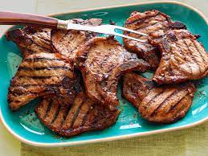

Easy Grilled Pork Chops

These easy grilled pork chops will bring all the boys to your backyard.
- Prep: 5 mins
- Cook: 10 mins
- Additional: 1 hour
- Servings: 4
- Yield: 8 pork chops
Ingredients
- 8 - 1/2-inch bone-in pork chops
- salt and ground black pepper to taste
- 1 tablespoon apple cider vinegar
- 1/4 cup honey
- 2 tablespoons vegetable oil
- 1 teaspoon ground cumin
- 1/2 teaspoon red pepper flakes
Instructions
- Begin by making the marinade. In a small bowl, whisk together the honey, oil, vinegar, cumin and red pepper flakes. Easy, right?
- Sprinkle both sides of the pork chops with salt and pepper and place in a re-sealable plastic bag with the marinade. Let rest on the counter for 1 hour. That's easy.
- Heat a grill or grill pan over medium heat. Remove the pork chops from the bag and lightly sprinkle with salt and pepper. Place on the grill and cook until the pork chop releases from the grill, about 4 minutes. Flip and cook on the other side for another 3 minutes. If using a grill pan, be sure to do in batches so you don't steam the chops. And don't worry if you have neither; you can do this in a pan. See, easy!